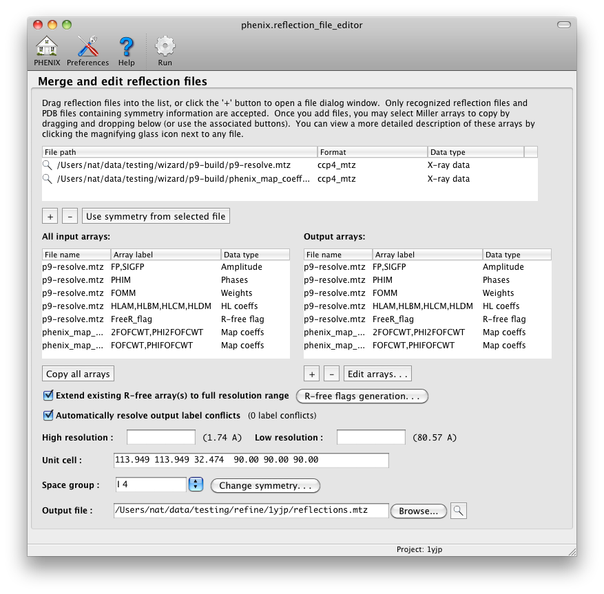
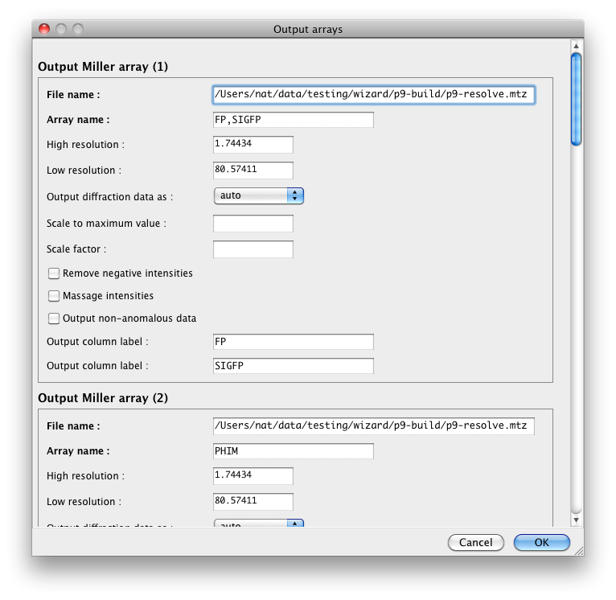

Phenix includes a simple program for combining reflection data from different files and manipulating R-free flags. Any combination of data in the form of Miller arrays (any set of values indexed by h,k,l) may be merged into a single file, with the limitation that the crystal lattices specified in each file must be compatible. All input formats readable by Phenix are supported, but only MTZ files are written. Output is limited to 25 different columns, which usually corresponds to significantly fewer Miller arrays (for example, experimental phases or Hendrickson-Lattman coefficients usually consist of four columns).

To add an input file, click the "+" button below the top list or simply drag files from the desktop into the list. Available Miller arrays will automatically be loaded into the input list, and the crystal symmetry (if present in the file(s)) will be updated. Select arrays by drag-and-drop into the output list or using the buttons below. If different arrays have the same column label this will be noted in the window. You can edit the output labels and resolution limits for individual arrays by clicking the "Edit arrays. . ." button. You can also manipulate the output data by merging anomalous data or converting to and from intensities and amplitudes.

If an R-free set is not present in the output file you may create one by clicking the "R-free generation" button. The default behavior is to flag 5% of reflections up to a maximum of 2000. Currently the assignment of flags is completely random across the entire resolution range, but will default to using the highest possible lattice symmetry initially and expanding to the actual symmetry. (In other words, if the space group is P4, the R-free set will be generated in P422 and expanded to P4.) Alternately, you may pick the test set in thin resolution shells, which helps avoid bias due to non-crystallographic symmetry. (Since the test set will not be evenly distributed across the entire resolution range, don't use this option if NCS is not present.)
An existing R-free set may also be extended to the entire resolution range of the output file, e.g. when switching to a higher-resolution dataset for a partially refined structure. This will also use the highest possible lattice symmetry, and will automatically determine the test set size. If you previously assigned the test set in thin shells using DATAMAN or SFTOOLS, the program will attempt to detect this and issue a warning.
Phenix uses the CNS/XPLOR convention for R-free flags, where 1 marks the test set and 0 the "working" set. By default, all R-free arrays will be written in this format as well, regardless of source; if you generated R-free flags in CCP4, which assigns random numbers (usually 0 through 19) and uses 0 to mark the test set, they will be converted first. If you prefer to preserve the original integer values, the R-free flags dialog includes an option to do this; however, this is incompatible with extending an existing set. Alternately, you may choose to output all R-free flags in the CCP4 format even if extending existing flags, but this will renumber all flags not in the test set. (It also assumes that the test set size is approximately 5% of the total number of reflections.)
The editor is primarily designed around common functions operating on a single experimental dataset - in particular the manipulation of R-free flags. It is not suitable for some more complex (but less frequently used) scenarios. A few specific limitations:
- Unmerged data is allowed as input, but the output will always be merged (with anomalous pairs preserved if present).
- Some features of the MTZ format are not supported. In particular, all arrays will be treated as part of the same "crystal" and "dataset" objects in the hierarchy of the MTZ file. This restricts all output arrays to using the same unit cell dimensions. For this reason, the editor may be unsuitable for multi-crystal experiments such as MIR.
- The wavelength (if defined) will also be the same for all arrays. If not defined it will default to zero.
- The editor works best when all input files are in MTZ format; other formats should work but have not been tested as thoroughly.
- Output labels will be guessed automatically, but this breaks down when merging anomalous data, which halves the number of output arrays (and makes the trailing (+) and (-) unnecessary). This will be checked at runtime.
- Some data processing programs output the columns F SIGF DANO SIGDANO, which if they occur sequentially in an MTZ file will be treated as a single data array. Internally, these are converted to anomalous data (i.e. F(+) SIGF(+) F(-) SIGF(-)), instead of keeping the original non-anomalous amplitudes and separate anomalous differences. We recommend against using these data in PHENIX, as they are less reliable than the original anomalous amplitudes or intensities (and are not otherwise used here).
- The editor will not otherwise attempt to impose sensible label names, except when converting between intensities and amplitudes.
- All input files must either have the same symmetry (allowing for slight differences in unit cell dimensions and screw axes) or leave it undefined (e.g. CNS format). To mix arrays from files with different symmetry, first convert each to the desired final symmetry, then combine them.
- If you want to convert the data into a higher-symmetry space group based on suggestions from Xtriage, the Xtriage GUI now has an option to do this directly instead of running the editor separately.